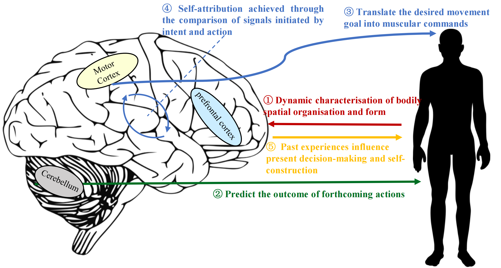
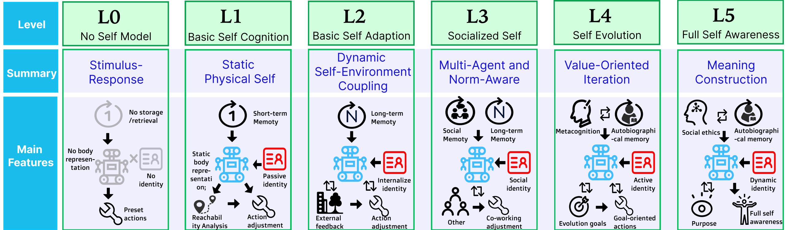

Self Model
A Unified Framework for Embodied Artificial Intelligence
The Self Model provides an internal representation that enables an embodied agent to understand its own body, capabilities, memories, and decision processes. Inspired by cognitive science, we define four computational modules that form a closed loop for continuous self‑calibration.
The Concept of Self: From Human to Agent
For humans, the concept of self is not only proof of one’s own existence but also the foundation of perception, thought, and emotion. Biologically, the core neural mechanisms of self include: body schema (dynamic representation of body geometry), forward model (predicting movement outcomes, mainly supported by the cerebellum), inverse model (converting goals into muscle commands via the motor cortex and basal ganglia), agency (attributing actions and their consequences to oneself), and perceptual‑memory model (integrating multisensory information and episodic memory via the hippocampus and prefrontal cortex). This unified, subjective framework is equally applicable and necessary in embodied AI. However, existing research mostly focuses on isolated components, lacking an integrated framework that fuses these functions, which prevents agents from achieving true autonomy, adaptation, and continuous learning.
Therefore, to replicate human-like self-awareness in robots, we start from four fundamental pillars: self-perception (awareness of one’s own morphology and state), self-prediction (anticipating action outcomes), self-memory (maintaining internal state continuity), and self-decision (selecting feasible, goal-directed actions based on self-identity). These pillars fill the gaps in current embodied capabilities, enabling robots not only to understand the external world but also to form a coherent internal representation of “themselves”.

Self model in embodied AI
The Self Model is a unified internal representation that enables an embodied agent to understand its own body, capabilities, memories, and decision processes. It bridges perception, memory, prediction, and decision into a closed‑loop cognitive architecture, allowing the agent to reason not only about the external world but also about itself — its actions, limitations, and consequences.
Four core modules:
- Perception – Real‑time awareness of body state (joints, collisions, morphology).
- Memory – A 3D semantic self‑map that records spatial and experiential history.
- Prediction – Forecasting action outcomes (e.g., grasp success) and diagnosing failures.
- Decision – Goal‑to‑action mapping guided by self‑identity and predicted results.
These modules form a perception–memory–prediction–decision loop, enabling continuous self‑calibration and adaptive behavior in complex environments.

The L0–L5 Hierarchy
To systematically evaluate self‑modeling capabilities, we propose a six‑level hierarchy (L0–L5) that characterizes developmental stages from non‑self‑representation to full self‑awareness.
- L0 – Non‑Self Model: Purely reactive, no self/non‑self distinction.
- L1 – Basic Self‑Awareness: Static physical self, short‑term memory, basic collision judgments.
- L2 – Basic Self‑Adaptation: Dynamic self‑environment coupling, generalized forward prediction.
- L3 – Socialized Self: Role‑aware behavior, social memory, recognition of others’ intentions.
- L4 – Sustained Self‑Evolution: Autobiographical memory, metacognitive monitoring, value‑oriented iteration.
- L5 – Full Self‑Awareness: Worldview and ethical reasoning, hierarchically organized decision‑making.
This hierarchy provides the first operational taxonomy for evaluating progress toward autonomous, self‑aware embodied systems.

The paper “Self Model for Embodied Artificial Intelligence” presents the first systematic formulation of this framework, including a detailed L1 implementation and experimental validation. The video below demonstrates the robot with an L1-level self model performing a garbage cleaning task. For the full technical details, please see the paper below.
📄 Series of Papers
Self Model for Embodied Artificial Intelligence
Shuqiang Jiang, Sixian Zhang, Shida Tao, Xihong Zhu, Tianliang Qi, Xinhang Song
Journal of Computer Science and Technology, 2026
We are always open to discussions and collaborations. If you are interested in Self Model or related topics, please feel free to contact us at:
sqjiang@ict.ac.cn (Shuqiang Jiang)
sixian.zhang@vipl.ict.ac.cn (Sixian Zhang)